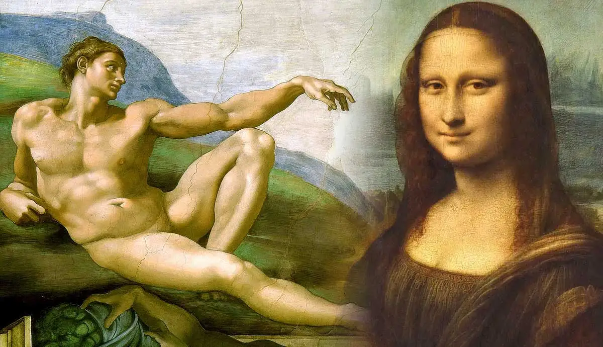

Mya Lam
The Renaissance was a period of European cultural, artistic, political and economic rebirth after the Middle Ages. The Renaissance promoted the rediscovery of classical philosophy, literature and art. Some of the greatest authors, scientists and philosophers thrived during this era, such as Da Vinci, Copernicus, Shakespeare and Mozart. Additionally, a cultural movement called humanism began to gain momentum across Europe. Humanism promoted the idea that people should embrace human achievements in education, classical arts, literature, and science. More people had access to information due to the invention of the Gutenberg printing press, which allowed for ideas to spread throughout Europe. Another key value at the time was the importance of having an open, curious and questioning mind. Due to this fact, there was an increased movement away from the ideas of the Catholic Church and towards reason and science. Another concept that spread throughout Europe was the idea of secularism, which is the separation of religion and state. Due to the new ideas of humanism, secularism and the movement towards science, the Renaissance represents an age of reason rather than faith.

(Examples of artwork created during the Renaissance Era.)